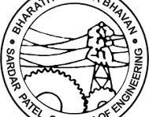

Automation Support Intern · EssilorLuxottica
MS in ing · Worcester Polytechnic Institute (WPI)
4+
Years Research & Industry
3
Peer-Reviewed Publications
10+
Projects Delivered
About
Where precision meets intelligent design.
I'm a Mechatronics Engineer pursuing my MS in Robotics at Worcester Polytechnic Institute (WPI), building on a strong B.Tech in Mechanical Engineering from SPCE, India.
Currently interning as an Automation Support Engineer at EssilorLuxottica–GENTEX, where I deploy vision-based inspection systems, troubleshoot and program industrial robotic arms, and resolve mechanical and software faults to minimize production downtime.
My work spans the full robotics stack, from SolidWorks CAD and ANSYS FEA through to Manufacturing, Robot Programming, and real-world deployment. I'm driven by problems where physical engineering and intelligent systems have to work together.
Deployed vision inspection system using Keyence Vision system and achieved 99% accuracy in inspection and maintained multi-robot manufacturing equipment on a high-throughput optical lens production line.
Key Responsibilities
Deployed automated vision-based label inspection to ensure traceability and reduce mispack risk
Troubleshot and programmed 6-axis, SCARA, and gantry robotic systems
Performed root cause analysis on recurring mechanical and software faults
Wrote technical documentation covering fault logs, repair procedures, and system configurations
Skills
Computer VisionEpson RC+RT ToolBox3Studio 5000Root Cause AnalysisDocumentation
Click to expand ↗▾
IndustryAug 2023 – Apr 2024
Mechanical Design Engineer (Robotics)
The Innovation Story, India
SolidWorksCNC / ManufacturingMechatronics
Overview
Designed and manufactured two national competition robots, Blue Bot Builder and Grasshopper, achieving ~90% reliability in 3 months. Mentored 20 students in CAD, physics, and manufacturing.
Key Achievements
Designed precise actuators and rigid modular chassis optimised for repeatability under competition pressure
Fabricated using in-house CNC, lathe, and 3D printing
Taught physics, SolidWorks CAD, and manufacturing to 20 students across grade levels and helped the team achieve 4th place nationally
Skills
SolidWorksCNC3D PrintingJavaMechatronics
Click to expand ↗▾
ResearchJun 2022 – Aug 2023
Project Research Assistant
Technology Innovation Hub (IIT Bombay), India
CADManufacturingADAMSOptimizationOctave
Overview
Designed an autonomous onion harvester and optimised a bomb disposal rover's rocker-bogie mechanism, resulting in two peer-reviewed publications.
Key Work
Developed the CAD model and manufactured an Autonomous Onion Harvester to implement an Energy-Aware Path Planning algorithm; managed selection of motor for locomotion and conveyor, and vendor procurement
Used ADAMS dynamic analysis to validate rocker-bogie ground-contact constraints
Implemented Simulated Annealing in Octave to optimise rocker-bogie step-climbing parameters
2 publications: IEEE AgriFood Electronics (2024) & Journal of Institution of Engineers India (2024)
Skills
PythonADAMSOctaveCADFEA3D Printing
Click to expand ↗▾
IndustrySep 2021 – Dec 2021
Trainee
The Innovation Story, India
CADCNC MachiningCurriculum Design
Overview
Designed and prototyped a competition robot while developing a robotics curriculum to teach core concepts to students.
Key Work
Designed and prototyped a competition robot, enhancing skills in CAD and CNC machining
Developed a robotics curriculum covering core concepts for student training
Click to expand ↗▾
IndustryJun 2021 – Jul 2021
Intern Design Engineer
Prolific 3D Tech, India
SolidWorksGD&TReverse Engineering
Overview
Led reverse engineering of a Can Filling and Seaming Machine with 50+ component, producing fully constrained 3D assemblies and GD&T manufacturing drawings.
Key Work
Measured all 50+ components to capture accurate geometry and fit conditions
Built fully constrained 3D SolidWorks assemblies with correct tolerances
Created 2D drawings with comprehensive GD&T including tolerance stack-ups and datum structures
Sardar Patel College of Engineering, India · CGPA 9.04 / 10
Mechanical Eng.CAD / FEAROBOCON
Overview
Four-year engineering degree with strong fundamentals in mechanical design, manufacturing, and dynamics. Active in ROBOCON international robotics competitions throughout, progressing to Team Captain.
Highlights
Undergrad thesis on 6-DOF autonomous cooking robotic arm (published)
SPCE ROBOCON - Team Captain: AIR 19 (2021); Team Member: AIR 9 (2019, 2020)
🏅 Neural Networks & Deep Learning — Coursera🏅 ANSYS Workbench Certified🏅 Python for Data Structures — Coursera🏅 Digital Electronic Circuits🏅 Siemens PLC
Projects
Selected Work
▸Industry & Internship Work
↗
Vision-Based Label Inspection System
Deployed automated vision inspection on a high-throughput manufacturing line to verify label correctness and traceability, reducing mispack risk before shipment.
Computer VisionQuality AutomationManufacturing
↗
Industrial Robot Programming & Maintenance
Troubleshot and programmed 6-axis, SCARA, and gantry robotic systems, resolving mechanical and software faults to minimize downtime across a multi-robot manufacturing environment.
Robot ProgrammingRoot Cause AnalysisMaintenance
↗
Competition Robots: The Innovation Story
Designed and manufactured two competition robots, Blue Bot Builder and Grasshopper, achieving ~90% reliability within three months using innovative mechanisms and in-house manufacturing.
SolidWorksCNC / ManufacturingMechatronics
↗
Autonomous Onion Harvester
Designed and manufactured a full autonomous harvesting robot for small farms with Energy-Aware Path Planning and automatic return-to-base on low battery.
PythonPath PlanningCAD / Manufacturing
↗
Bomb Disposal Rover & Rocker-Bogie Optimization
Improved rover terrain stability using ADAMS dynamic analysis and optimized a rocker-bogie mechanism via Simulated Annealing in Octave.
ADAMSSimulated AnnealingOctave
↗
Can Filling Machine: Reverse Engineering
Reverse engineered a 50+ component Can Filling and Seaming Machine, producing fully constrained 3D assemblies and GD&T drawings in SolidWorks.
SolidWorksGD&TReverse Engineering
▸Academic Projects
↗
6-DOF IK Solver Benchmarking for VR Teleoperation
Implemented and benchmarked 4 IK algorithms (NR, I-DLS, SVD-DLS, PSO) on the OpenManipulator-X using ROS2 and DH parameters, plus a full VR-to-robot teleoperation pipeline.
PythonROS2 / MATLABUnity / VR
↗
Chance Constrained RRT Motion Planner
Implemented a CC-RRT planner handling Gaussian uncertainty, probabilistic collision checks, and dynamic obstacles with Docker/GitHub CI/CD workflows.
Motion PlanningPythonDocker / GitHub
↗
Robotic Arm Control: ROS 2
Built Python ROS2 nodes for velocity kinematics, incremental position control, linear path motion, and a PD controller (Kp=0.19, Kd=0.03) at 100 Hz using Jacobian pseudoinverse methods.
ROS2PythonJacobian / IK

↗
Autonomous Cooking System: Undergrad Thesis
Designed, fabricated, and controlled a 6-DOF PUMA robotic arm for autonomous cooking, with shoulder torque 616.89 Ncm, ±1° joint accuracy, and 42.7 kg-cm payload validated on physical prototype.
Webots / ROSANSYS / FEAArduino / PID
↗
Pulley-Driven Crimping Tool
Designed a motorized 5-pulley crimping attachment with mechanical advantage of 6, delivering 1000 N crimping force in under 4 seconds, eliminating manual effort to prevent repetitive strain injury.
SolidWorksPulley / LinkageMachine Design
↗
Two-Stage Reverted Helical Gearbox
Designed a 49 kW, 1000 to 179 RPM two-stage helical gearbox with gear life over 17,800 hrs, SKF bearing life over 12,500 hrs, and noise below 85 dB, with full SolidWorks model and GD&T drawings.
SolidWorksHelical Gear DesignGrabCAD
▸Leadership & Competition
↗
SPCE ROBOCON: Technical Member & Team Captain
4 years of national DD Robocon competition as Technical Member (AIR 9 twice, 2019 & 2020) and Team Captain (AIR 19, 2021). Designed kicking, claw, and throwing mechanisms with ADAMS-validated 7.5 m/s launch and 97%+ repeatability.
ADAMS / ANSYSCATIA V5Team Leadership
Vision-Based Label Inspection System
EssilorLuxottica–GENTEX · Automation Support Intern · May 2025–Present
Deployed automated vision-based inspection checks on a high-throughput manufacturing line to ensure label correctness and traceability before shipment, directly improving production quality and reducing mispack risk reaching customers.
Designed and tuned vision inspection logic for label presence, orientation, and barcode validation using Keyence Vision System and assiting in integration with Aleen-Bradley PLC
Iteratively refined detection parameters through structured testing to reduce false-pass rates
Produced clear technical documentation for maintenance and cross-team knowledge transfer
Industrial Robot Programming & Maintenance
EssilorLuxottica–GENTEX · Automation Support Intern · May 2025–Present
Troubleshot and programmed robotic arms and automated production-line equipment across a multi-robot manufacturing environment. Resolved mechanical and software faults to restore operation and minimize downtime.
Diagnosed and resolved gripper, alignment, and sensor faults across 6-axis, SCARA, and gantry systems
Programmed and refined robot motion sequences for improved reliability and precision
Applied root cause analysis to recurring faults, implementing corrective and preventive measures
Wrote technical documentation covering fault logs, repair procedures, and system configurations
Competition Robots: The Innovation Story
The Innovation Story, India · Mechanical Design Engineer (Robotics) · Aug 2023–Apr 2024
Blue Bot Builder: SolidWorks RenderGrasshopper: SolidWorks Render
Designed and manufactured two competition robots, Blue Bot Builder and Grasshopper, for national-level game challenges, achieving ~90% reliability within three months entirely through in-house manufacturing, while simultaneously coaching 20 students.
Blue Bot Builder: precise actuators and rigid modular chassis optimised for repeatability under competition pressure
Grasshopper: linkage-based mechanism for a dynamic traversal challenge, iterated rapidly through prototyping
~90% mechanism reliability from concept to competition in 3 months using CNC, lathe, and 3D printing
Mentored 20 students across grade levels, teaching physics, SolidWorks CAD, and manufacturing principles
Team placed 4th nationally in the competition
Autonomous Onion Harvester
Technology Innovation Hub, IIT Bombay · Project Research Assistant · Jun 2022–Aug 2023
Autonomous Onion Harvester: CAD Render
Designed and manufactured a complete autonomous robotic harvesting system for small farm environments. The robot navigates fields independently, harvests onions with a custom end-effector, and returns to base automatically on low battery.
Developed an Energy-Aware Path Planning algorithm to maximise field coverage per charge cycle
Implemented return-to-base on low battery for uninterrupted field operation
Led motor, battery, and BMS selection; created manufacturing drawings; identified vendors and managed procurement
Designed and fabricated the full mechanical system: drivetrain, chassis, and harvesting mechanism
Published in IEEE Transactions on AgriFood Electronics (2024)
Bomb Disposal Rover & Rocker-Bogie Optimization
Technology Innovation Hub, IIT Bombay · Project Research Assistant · Jun 2022–Aug 2023
Two related rover projects targeting terrain adaptability. Redesigned suspension of a bomb disposal rover using ADAMS dynamic analysis, then optimised a rocker-bogie mechanism using Simulated Annealing in Octave for maximum step-climbing performance.
Used ADAMS dynamic analysis to validate rocker-bogie mechanism ensuring at least one side's wheels always maintain ground contact
Built a Simulated Annealing routine in Octave to optimise key rocker-bogie design parameters
Quantified step-climbing improvement through systematic parameter sweeps
Published in Journal of The Institution of Engineers (India): Series C (2024)
Can Filling Machine: Reverse Engineering
Prolific 3D Tech · Intern Design Engineer · Jun–Jul 2021
Can Filling & Seaming Machine: SolidWorks Reverse-Engineering Model
Led reverse engineering of a 50+ component Can Filling and Seaming Machine. Took precise physical measurements of all sub-assemblies and produced complete 3D CAD models and 2D manufacturing drawings in SolidWorks ready for fabrication.
Measured all 50+ components precisely to capture accurate geometry and fit conditions
Built fully constrained 3D SolidWorks assemblies with correct tolerances and mating conditions
Created 2D drawings with comprehensive GD&T including tolerance stack-ups, fits, and datum structures
Identified and incorporated design modifications to improve upon the original
6-DOF IK Solver Benchmarking for VR Teleoperation
WPI · Graduate Project (RBE 500) · Oct–Dec 2024
Implemented and benchmarked four IK solvers for the OpenManipulator-X robot using standard Denavit-Hartenberg (DH) parameters and ROS 2. Built a full VR-to-robot teleoperation pipeline for real-time manipulation.
Implemented a Chance-Constrained RRT (CC-RRT) motion planner accounting for Gaussian state uncertainty, probabilistic collision checks, and dynamic obstacles, using Docker and GitHub for reproducible CI/CD-style development.
Implemented CC-RRT with Gaussian uncertainty propagation along sampled trajectories
Integrated probabilistic collision checking with configurable risk tolerance thresholds
Handled dynamic obstacles within the uncertainty-aware planning framework
Validated collision-safe trajectories across varied obstacle configurations
Used Docker and GitHub for reproducible, CI/CD-style development
A series of progressively complex ROS 2 control implementations for the OpenManipulator-X, from velocity-level kinematics and linear path motion through to a from-scratch PD controller running at 100 Hz in current control mode.
Built 3 Python ROS2 nodes: vel_kinematics (Jacobian & twist), vel_calc (incremental joint positions), vel_pub (constant twist publisher) for linear Cartesian path execution
Implemented Jacobian matrix and Moore-Penrose pseudoinverse for joint-velocity resolution
PD controller for Actuator 4 in current control mode (DYNAMIXEL X, 1 MHz baud); effort = Kp·error − Kd·derivative
Tuned Kp = 0.19, Kd = 0.03 with fast convergence and minimal overshoot across 3 reference tests: 930 to 2000, 2180 to 1500, and 930 to 1800 encoder units
Logged 10 s of data at 100 Hz; visualised with Python/matplotlib
▶
Video: drop in when ready
Save file as: videos/ros2_control.mp4
Full System CAD Assembly: Robot Arm, Dispensers & Cooktop
Designed, fabricated, and validated a 6-DOF PUMA-configured robotic arm for autonomous culinary assistance, targeting three Indian recipes (Bhindi Masala, Pav Bhaji, Dosa). The system integrates a carousel solid-ingredient dispenser, liquid/batter dispensers, and a three-fingered claw end-effector.
Optimised link lengths via Simulated Annealing; shoulder torque = 616.89 Ncm, elbow = 357.22 Ncm, wrist = 239.93 Ncm at full extension
ANSYS static structural FEA on aluminium links (1 mm wall) and transient thermal analysis, validated within ~8% error across 30–125°C
Simulated IK using geometric kinematic decoupling in Webots (Python); C²-continuous sin² velocity profiles for smooth trajectories
Arduino Mega control with 10-turn potentiometers; 0.4° sensor resolution, corrected to ±1° via linear regression calibration
Payload ≥42.7 kg-cm at joint 1; 5 of 6 DOF operational on physical prototype
Published in Materials Today: Proceedings, ICAME22 (2022), Vol. 68, Part 6, pp. 1930–1945
Rendered Assembly: SolidWorksExploded View with Bill of Materials (20 components)
Designed a motorised crimping tool attachment to eliminate the large manual forces that cause repetitive strain injury in manufacturing workers. The device uses a 5-pulley rope drive actuated by a DC motor and Li-Po battery.
5-pulley rope drive provides mechanical advantage of 6; max load 1000 N (actual peak 678.76 N incl. self-weight and spring force)
Motor: Rhino IG32 12V, 686.7 Ncm at 30 RPM, full crimp cycle in 3.9 s (within 10 s requirement)
Two-Stage Reverted Helical Gearbox: SolidWorks RenderExploded View with Bill of Materials
Designed a complete two-stage reverted helical gearbox delivering 49 kW at 95% efficiency, reducing speed from 1000 RPM to 179 RPM (ratio 5.59:1). All components designed from first principles against a full set of client specifications.
Four years of national DD Robocon competition, progressing from technical team member to team captain. Managed the full project lifecycle including design, ADAMS/ANSYS analysis, fabrication, and 35-person team coordination through COVID-19 restrictions.
Team Captain, AIR 19, Robocon 2021 "Throwing Arrows Into Pots": Led design and CAD modelling; ADAMS-validated launch velocity 7.5 m/s, angle 58.6° (target 60°), range z=5 m, y=−0.073 m; TR housed 3 arms with τ=4.2–4.4 N-m and >97% repeatability
Technical Member, AIR 9, Robocon 2020 "ROBO RUGBY 7s": Designed a kicking mechanism using elastic energy to launch a rugby ball through goal posts; separate coupling/decoupling mechanism for reloading; ANSYS chassis deformation 0.1854 mm (PR) / 0.4461 mm (TR)
Technical Member, AIR 9, Robocon 2019 "Sharing the Knowledge": Designed claw mechanism to pick and throw ball from rack, simplifying system design; contributed to quadruped robot with ADAMS-validated creep/trot gaits and worm-gear knee joints (z1/z2 = 1/32)
Holonomic 3-wheel drive (ø100 mm omni wheels); dual-camera + red laser image processing for distance estimation; TFMini LIDAR for autonomous positioning
Open to opportunities in robotics, mechanical design, industrial automation, and embedded systems. Currently based in Worcester, MA and available from May 2026.